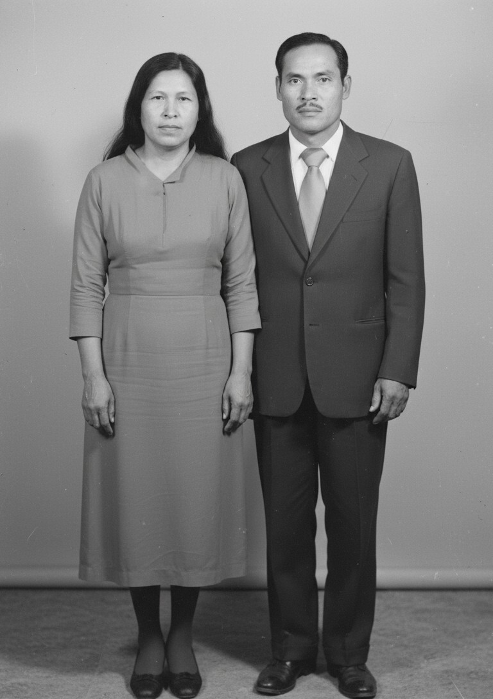

Casa García Gaona · Huachichil · Galeana

En el programa oral se nombra Franck Gaona. Presidente del Frente Cardenista de Reconstrucción Nacional en Coahuila. Fundador de Soy Divergente. Fundador de Grupo Empresarial Gaga de México. Impulsor de Genealogía Sefardí. Activista y luchador social del semidesierto coahuilense.
De Blas de la Garza Falcón por Juana de la Garza y Lorenzo García de Ábrego. Nudo del XVIII: Joseph García × Francisca Xaviera Ramos, 1751. Baja por Guajardo, Saucedo, Flores, Peña, Castilleja, Vázquez y Gaona.
| Generación | Casa |
|---|---|
| Blas de la Garza Falcón | De la Garza |
| Juana de la Garza × Lorenzo García de Ábrego | García Garza |
| Joseph García × Francisca Xaviera Ramos, 1751 | García Ramos |
| Juan Antonio García × Josefa Guajardo | García Guajardo |
| Antonio / Francisco García × Gertrudis Saucedo | García Saucedo |
| Jesús García × Rosalía Flores | García Flores |
| Jesús García × Jacoba de la Peña | García Peña |
| Francisco García de la Peña × María García | García Peña |
| Hermilo García × Macaria Castilleja | García Castilleja |
| Jonás García × Francisca Vázquez | García Vázquez |
| Margarito García × Ramona Gaona | García Gaona |
| Francisco Javier García Gaona | García Gaona |